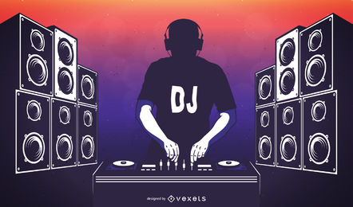
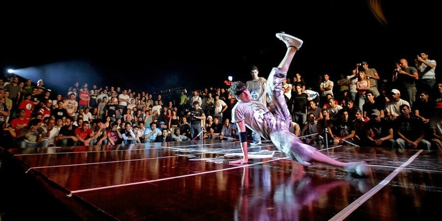
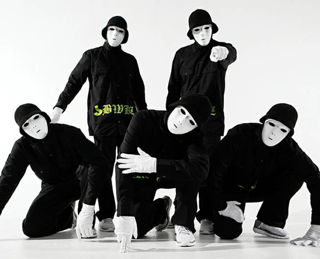

¿Qué es el Hip-Hop?
El hip hop es un movimiento cultural urbano surgido en los 70 que se compone de distintas disciplinas: DJ, grafiti, MC y break-dance.
DJ
Grafiti
Rap
BreakDance
La creencia más generalizada en la sociedad es que el Hip hop es una corriente musical basada en rimar a gran velocidad sobre una base rítmica. Pero, en realidad, esta es solo una de sus muchas vertientes: el género musical de carácter urbano y reivindicativo conocido como rap. En realidad, el Hip hop es la cultura que engloba distintas corrientes callejeras y que va mucho más allá de cantar. Se trata de un movimiento cultural que nació en la década de los 70 en las calles del distrito del Bronx, en Nueva York, como respuesta a la represiva situación en la que vivían los ciudadanos afroamericanos, recluidos en una especie de gueto moderno. Se ha popularizado y extendido desde sus primeros momentos y actualmente, esta subcultura se define a través de cuatro manifestaciones principales: DJ, grafiti, MC y break-dance. Te contamos los secretos de estos cuatro géneros que componen la poesía de la calle.
Rap
MC es como se conoce a la persona que interpreta el género musical conocido como rap, que nació influenciado por el soul, el funk e incluso algunos ritmos latinos. Los raperos o MC’s emplean una lírica fluida para transmitir su descontento social y su inconformismo en un contexto de lucha de clases heredado de sus inicios. Conforme ha ido desarrollándose, el rap ha perdido parte de su esencia y ha evolucionado en una rama más de la música comercial que toca temas más triviales con raperos como Eminem o SFDK.
Exponentes
Eminem
Canserbero
Ice Cube
Mcklopedia
DJ
El DJ o Disc-Jockey es aquel que crea y reproduce pistas musicales en una mesa de mezclas. En los años 70 se empezaba a experimentar con la práctica de mezclar música. La producción del DJ es parte fundamental dentro del rap, ya que sirve como base para la rima del MC. Una técnica común empleada por el DJ es el scratching, que consiste en mover de adelante a atrás el vinilo repetidas veces mientras se reproduce para generar un sonido de transición entre ritmos. Actualmente, las mesas de mezcla cuentan con unos platos destinados a esta acción y las canciones son archivos digitales.
Grafiti
El grafiti se desarrolló antes de la emergencia del Hip hop como cultura. Consiste en utilizar pintura en aerosol para dibujar y colorear textos e imágenes llamativas sobre un muro. Normalmente el texto se corresponde con la firma de su autor, aunque también puede tratarse de un texto más abstracto o creativo. Su finalidad es impactar visualmente y actuar como llamada de atención del mismo modo en que lo hace el rap. Esta técnica, que suele incluir un elemento subversivo, ha pasado a considerarse un arte gracias a los trabajos de conocidos grafiteros como Banksy o Shepard Fairey.
BreakDance
El breakdance es la forma en la que los b-boys, como se conoce a la gente que practica esta actividad, tienen de bailar el rap. Los jóvenes que lo practican se agrupan en corro y bailan de uno en uno o por parejas frente al resto. Sus pasos más característicos incluyen mantenerse en equilibrio durante varios segundos sobre las manos y la cabeza o girar frenéticamente en el suelo sobre el torso.
